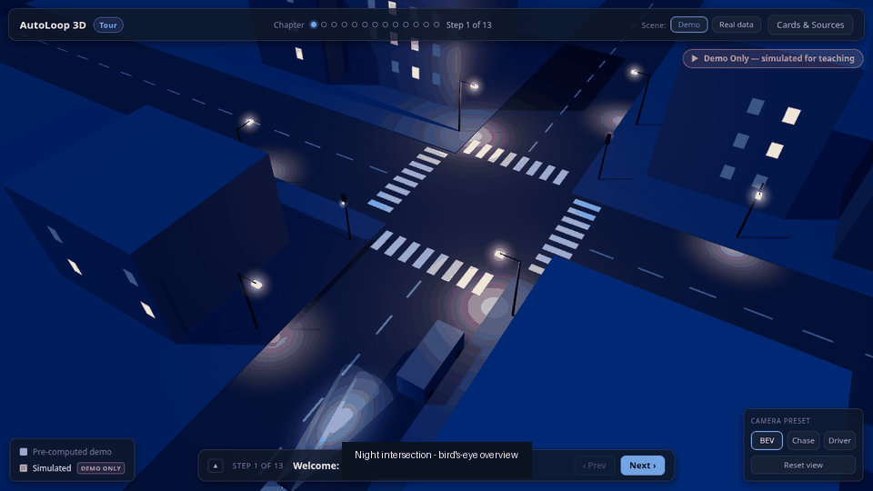

My Advantage
I combine AI infrastructure expertise with product thinking — bridging deep technical depth and real customer impact.
Solutions Architect
Automotive Solutions Architect at Amazon Web Services
I design and validate GenAI applications, GPU infrastructure, and agentic AI architectures for automotive customers at AWS — while exploring Personal AI products built around individual needs.
I combine AI infrastructure expertise with product thinking — bridging deep technical depth and real customer impact.
I build cloud solutions for automotive workloads like smart cockpit, autonomous driving data loops, connected vehicles, and embodied intelligence.
I explore Personal AI, AI-native products, and hardware experiences that make individuals meaningfully more capable.

Interactive 3D course · autonomous driving
A browser-based 3D course that teaches how a self-driving car thinks, fails, and learns — one night street, one occluded pedestrian, replayed through the full perception pipeline and the offline data loop, ending with a V1 vs V2 replay on the same eight seconds. Built with React Three Fiber on real nuScenes night data; every simulated number is honestly badged.
Open to conversations on Personal AI, AI-native products, agent systems, AI infrastructure, and automotive AI.
Point a phone camera at the code to add me to your contacts.
In WeChat, downloads are blocked — scan the code instead.